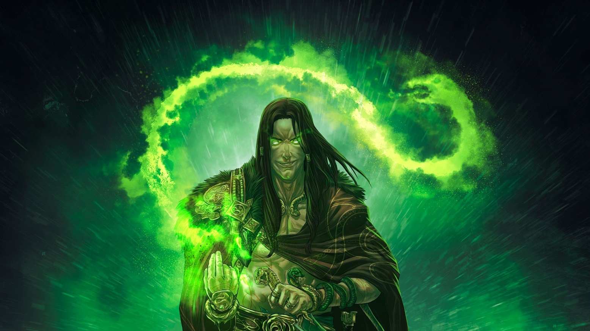

Loki
The Trickster
Loki is a god in Norse mythology. According to some sources, Loki is the son of Fárbauti (a jötunn) and Laufey (mentioned as a goddess), and the brother of Helblindi and Býleistr. Loki is married to Sigyn and they have two sons, Narfi and Nari or Váli. By the jötunn Angrboða, Loki is the father of Hel, the wolf Fenrir, and the world serpent Jörmungandr. In the form of a mare, Loki was impregnated by the stallion Svaðilfari and gave birth to the eight-legged horse Sleipnir. Loki's relation with the gods varies by source; he sometimes assists the gods and sometimes behaves maliciously towards them. Loki is a shape shifter and in separate incidents appears in the form of a salmon, a mare, a fly, and possibly an elderly woman named Þökk (Old Norse 'thanks'). Loki's positive relations with the gods end with his role in engineering the death of the god Baldr, and eventually, Odin's specially engendered son Váli binds Loki with the entrails of one of his sons; in the Prose Edda, this son, Nari or Narfi, is killed by another son of Loki who is also called Váli. In both the Prose Edda and the Poetic Edda, the goddess Skaði is responsible for placing a serpent above him while he is bound. The serpent drips venom from above him that Sigyn collects into a bowl; however, she must empty the bowl when it is full, and the venom that drips in the meantime causes Loki to writhe in pain, thereby causing earthquakes. With the onset of Ragnarök, Loki is foretold to slip free from his bonds and to fight against the gods among the forces of the jötnar, at which time he will encounter the god Heimdallr, and the two will slay each other.
Loki is referred to in the Poetic Edda, compiled in the 13th century from earlier traditional sources; the Prose Edda and Heimskringla, written in the 13th century by Snorri Sturluson; the Norwegian Rune Poems, in the poetry of skalds, and in Scandinavian folklore. Loki may be depicted on the Snaptun Stone, the Kirkby Stephen Stone, and the Gosforth Cross. Scholars have debated Loki's origins and role in Norse mythology, which some have described as that of a trickster god. Loki has been depicted in or is referenced in a variety of media in modern popular culture.
TThe etymology of the name Loki has been extensively debated. The name has at times been associated with the Old Norse word logi ('flame'), but there seems not to be a sound linguistic basis for this. Rather, the later Scandinavian variants of the name (such as Faroese Lokki, Danish Lokkemand, Norwegian Loke and Lokke, Swedish Luki and Luku) point to an origin in the Germanic root *luk-, which denoted things to do with loops (like knots, hooks, closed-off rooms, and locks). This corresponds with usages such as the Swedish lockanät and Faroese lokkanet ('cobweb', literally 'Lokke's web') and Faroese lokki~grindalokki~grindalokkur, 'daddy-long-legs' referring both to crane flies and harvestmen, modern Swedish lockespindlar ("Locke-spiders"). Some Eastern Swedish traditions referring to the same figure use forms in n- like Nokk(e), but this corresponds to the *luk- etymology insofar as those dialects consistently used a different root, Germanic *hnuk-, in contexts where western varieties used *luk-: "nokke corresponds to nøkkel" ('key' in Eastern Scandinavian) "as loki~lokke to lykil" ('key' in Western Scandinavian).[1] While it has been suggested that this association with closing could point to Loki's apocalyptic role at Ragnarök,[2] "there is quite a bit of evidence that Loki in premodern society was thought to be the causer of knots/tangles/loops, or himself a knot/tangle/loop. Hence, it is natural that Loki is the inventor of the fishnet, which consists of loops and knots, and that the word loki (lokke, lokki, loke, luki) is a term for makers of cobwebs: spiders and the like."[3] Though not prominent in the oldest sources, this identity as a "tangler" may be the etymological meaning of Loki's name. In various poems from the Poetic Edda (stanza 2 of Lokasenna, stanza 41 of Hyndluljóð, and stanza 26 of Fjölsvinnsmál), and sections of the Prose Edda (chapter 32 of Gylfaginning, stanza 8 of Haustlöng, and stanza 1 of Þórsdrápa) Loki is alternatively referred to as Loptr, which is generally considered derived from Old Norse lopt meaning "air", and therefore points to an association with the air.[4] The name Hveðrungr (Old Norse '?roarer') is also used in reference to Loki, occurring in names for Hel (such as in Ynglingatal, where she is called hveðrungs mær) and in reference to Fenrir (as in Völuspa).[5]
